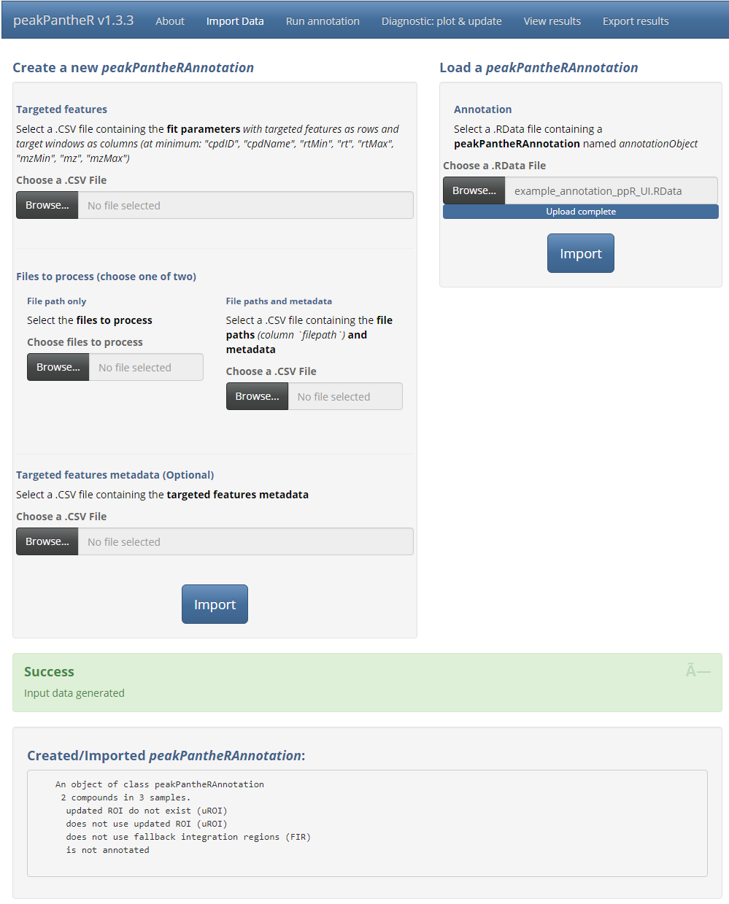
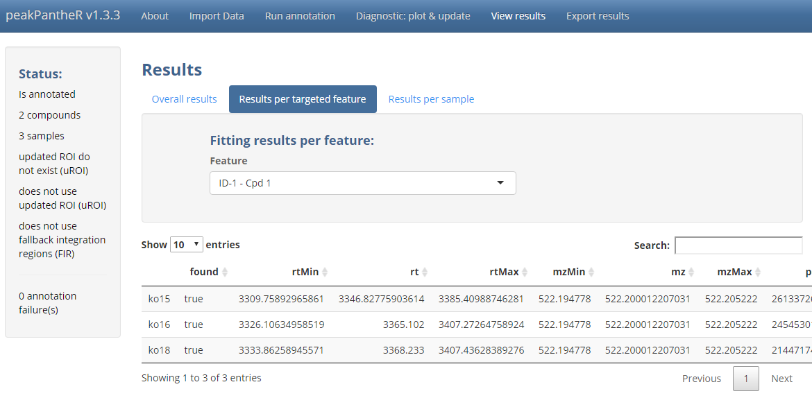

peakPantheR Graphical User Interface
Arnaud Wolfer
2020-10-11
Source:vignettes/peakPantheR-GUI.Rmd
peakPantheR-GUI.RmdPackage: peakPantheR
Authors: Arnaud Wolfer, Goncalo Correia
Introduction
The peakPantheR package is designed for the detection, integration and reporting of pre-defined features in MS files (e.g. compounds, fragments, adducts, …).
The graphical user interface implements all of peakPantheR’s functionalities and can be preferred to understand the methodology, select the best parameters on a subset of the samples before running the command line, or to visually explore results.
Using the faahKO raw MS dataset as an example, this vignette will:
- Detail the step-by-step use of the graphical user interface
- Apply the GUI to a subset of pre-defined features in the faahKO dataset
Abbreviations
-
ROI: Regions Of Interest
- reference RT / m/z windows in which to search for a feature
-
uROI: updated Regions Of Interest
- modifed ROI adapted to the current dataset which override the reference ROI
-
FIR: Fallback Integration Regions
- RT / m/z window to integrate if no peak is found
Example Data
This vignette employ the .csv or .RData files generated from faahKO in the vignette Getting Started with peakPantheR.
Getting Started
The graphical user interface is started as follow:
library(peakPantheR)
peakPantheR_start_GUI(browser = TRUE)
# To exit press ESC in the command lineThe graphical interface is divided in 5 main tabs, Import Data, Run annotation, Diagnostic: plot & update, View results and Export results.
\(~\)
Graphical User Interface
Import
The first input format is using a .RData file containing a peakPantheRAnnotation named annotationObject. This object can be annotated or not, for example loading a previously run annotation (see the Export section for more details).

\(~\)
The second input format consists of multiple .csv files describing the targeted features, spectra to process and corresponding metadata (optional). Spectra can also be directly selected on disk.

\(~\)
Run Annotation
With the targeted features and spectra defined, Run annotation handles the fitting parameter selection as well as downstream computation. First the use of updated regions of interest (uROI) and fallback integration regions (FIR) can be selected if available. If uROI haven’t been previously defined, the option will be crossed out. Secondly the curve fitting model to use can be selected from the interface. Finally Parallelisation enables the selection of the number of CPU cores to employ for parallel file access and processing.

\(~\)
Diagnostic: plot & update
Note:
The targeted regions of interest (
ROI) should represent a good starting point for feature integration, however it might be necessary to refine these boundary box to the specific analytical run considered. This ensures a successful integration over all the spectra irrespective of potential chromatographic equilibration differences or retention time drift.Updated regions of interest (
uROI) can be defined and will supplantROI.uROIcan for example be manually defined to “tighten” or correct theROIand avoid erroneous integration. Another use ofuROIis to encompass the integration region in each sample throughout the run without targeting any excess spectral region that would interfere with the correct analysis.Fallback integration regions (
FIR) are defined as spectral regions that will be integrated (i.e. integrating the baseline signal) when no successful chromatographic peak could be detected in a sample.FIRshouldn’t reasonably stretch further than the minimum and maximum bound (RT / m/z) of all found peaks across all samples for a given feature: this way no excess signal will be considered.
\(~\)
With all features integrated in all samples, Diagnostic provide tools to assess the quality of the peak integration and refine integration boundaries by setting uROI and FIR adapted to the specific chromatographic run being processed.
\(~\)
Annotation statistics summarises the success in integrating each targeted feature. The ratio of peaks found (%), ratio of peaks filled (%) and the average ppm error and RT deviation (s) will highlight a feature that wasn’t reliably integrated over a large number of samples. Visual evaluation (see below) and the adjustment of uROI or FIR might assist in tuning the integration of said feature.

\(~\)
Update uROI/FIR automatically sets uROI and FIR for each feature based on the RT / m/z boundaries of the peaks successfully integrated.

\(~\)
Diagnostic plot offer a visualisation of a selected feature across all samples in order of analysis. This visualisation highlights the fitting of the feature in each sample, as well as the change in RT / m/z (of the peak apex) and peak area through time. Samples can be automatically coloured based on a sample metadata column.

\(~\)
Once uROI and FIR are successfully set, it is possible to go back to the Run annotation tab and refit all features in all samples (Note: this will overwrite the current results).
\(~\)
View results
If the features integration are satisfactory, View results regroups all the integration results
\(~\)
Overall results displays a fitting property for all targeted features (as columns) and all spectra (as rows).

\(~\)
Results per targeted feature displays all fitting properties (as columns) for all samples (as rows) for a selected targeted feature.

\(~\)
Results per sample displays all fitting properties (as columns) for all targeted features (as rows) for a selected sample.

\(~\)
Export
The Export tab manages the saving of input parameters, annotation results and automated reporting.
The peakPantheRAnnotation in it’s current state can be saved as a .RData file which can subsequently be reloaded. The .csv files defining the current analysis can also be exported to reproduce the current processing.
All diagnostic plots from the Diagnostic tab can be automatically saved to disk for rapid evaluation. This can be executed in parallel if a large number of plots have to be generated.
Finally each fitting property can be saved as a .csv file with all samples as rows and all targeted features as columns. Additionally a summary table will present the integration success rate for each targeted feature.

\(~\)